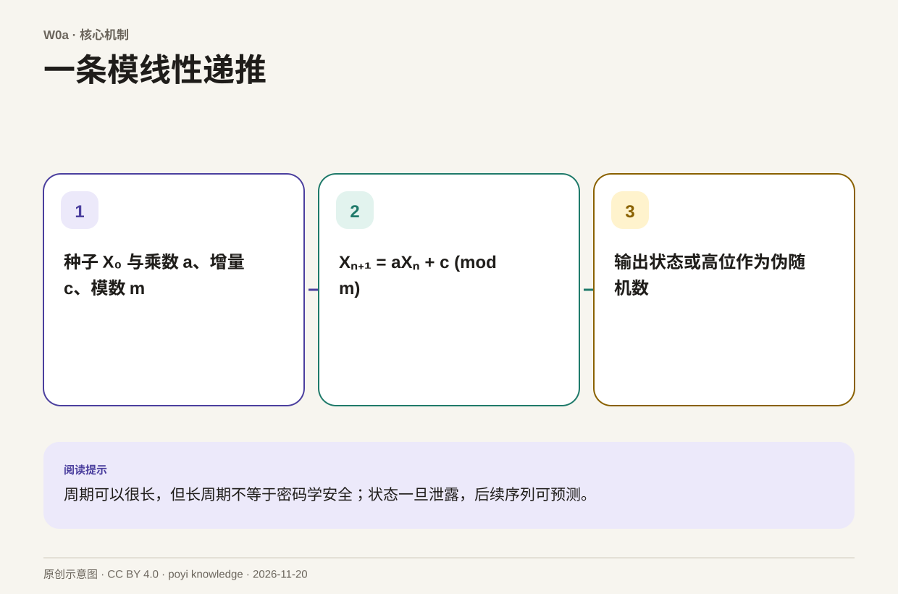
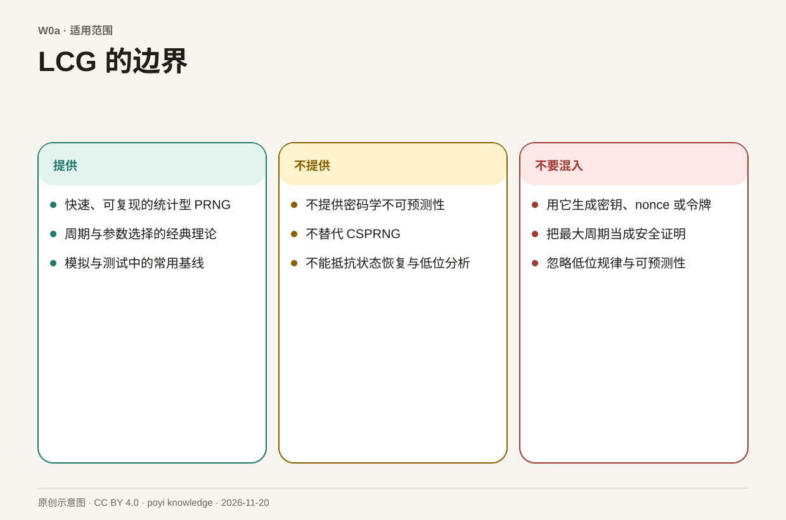

原理与机制
算法：线性同余发生器（Linear Congruential Generator）。线性同余发生器（LCG）是密码学史上最重要、也最被误用的一个算法。它只有一行公式：
X(n+1) = (a · X(n) + c) mod m
三个参数加一个种子：m 是模数，a 是乘子，c 是增量，X(0) 是种子。输出就是状态本身（或者状态的某几位）。就这么简单。它能成为半个世纪的标准答案，靠的是三个优点：快（一次乘加一次取模）、可移植（任何语言三行代码实现）、周期可以做到和模数一样长。Hull–Dobell 定理给出了「周期达到最大值 m」的充要条件：
1.c 与 m 互素；
2.a − 1 能被 m 的每一个素因子整除；
3.如果 4 整除 m，那么 a − 1 还要能被 4 整除。满足这三条，序列会遍历 0 … m−1 的每一个值一次，不重不漏。经典的 ANSI C 参数 a = 1103515245, c = 12345, m = 2^31 就满足；POSIX 的 rand48 系列用 a = 0x5DEECE66D, c = 0xB, m = 2^48，Java 的 java.util.Random 用的也是这一组。但必须立刻说清楚一件事：LCG 不是密码学安全的，而且差得很远。
它的输出序列是一条确定性的线性轨迹。给定足够多的输出，攻击者可以用纯代数（甚至格归约）把内部状态算出来。RFC 1750 在 1994 年的判词已经很重：「线性同余发生器已被攻破，而且已知有技术可以攻破所有多项式同余发生器……甚至只泄漏一个比特，也能从很短的序列里确定种子。」
结论只有一句，而且没有例外：
LCG 绝不可用于密钥生成。
不能用来生成对称密钥、IV、nonce、盐、会话令牌、密码重置令牌、或者任何「猜到就完蛋」的东西。用它生成的密钥等同于公开。这不是「不够好」的警告，而是**「密钥直接暴露」**的事实。

为什么重要
LCG 不是密码学的东西，但它是一个了不起的工程产物。 搞清楚它为什么成功、以及为什么不能用在密码学上，是理解现代密码学「什么才算安全」的最快路径。- 极快。 现代 CPU 上一次 LCG 只要几纳秒，比哈希快一个数量级。做蒙特卡洛模拟、负载均衡抖动、图形着色器里的噪声，没有比它更划算的方案。- 状态小。 状态就是一个 32 位或 64 位整数，可以塞进一个寄存器，也可以塞进缓存行里避免原子操作。- 统计性质可分析。 周期、相关性、格结构都有理论刻画。这在模拟领域是优点，在密码学领域是致命伤——因为「可分析」就意味着「可预测」。
- 一条直线。 没有任何分支、没有任何查表、没有任何异常情况。它是密码学里最容易审计的算法之一——正因如此，它才成了攻击者的教科书目标。
它在密码学里失败的原因，恰好是它在模拟里成功的原因：
LCG 的输出序列在数学上是一条格（lattice）。这意味着相邻的输出之间存在可以被写出来的线性关系。 对攻击者来说：
- 拿到完整状态输出 → 一个样本就够了。- 拿到高位截断输出（比如 Java 的
nextInt()给 32 位而状态是 48 位）→ 两个输出加一次 2^16 的暴力枚举就能复原整个状态。- 拿到低位输出 → 低位的周期极短（最低位周期就是 2），基本等于没加密。
换句话说：LCG 不是「弱」，是「透明」。
为什么它还活着？ 因为在统计模拟这个领域，「透明」根本不重要。研究者要的是「快、周期足够长、分布足够均匀」，而不是「猜不到」。所以 LCG 在数值分析里是主力，在密码学里是禁用区。把这两件事分清楚，是一个工程师成熟的标志。
应用与实例
- C 标准库的
rand()/srand()：C89 就定下的接口，POSIX 追加了random()/srandom()。glibc 的random()默认使用 128 字节状态的三次多项式加法反馈发生器（TYPE_3），输出 31 位；而rand_r()用的是最朴素的 LCG（next = next*1103515245 + 12345，取next/65536 % 32768）。-rand48/drand48/erand48：POSIX 的 48 位 LCG，m = 2^48。这是所有标准库里熵最多的 LCG，但 48 位仍然远远不够任何密码学用途。- Java 的java.util.Random：a = 0x5DEECE66D, c = 0xB, m = 2^48，每次返回状态的高 32 位。Java 的SecureRandom是完全不同的东西（默认走操作系统的NativePRNG，Linux 上读/dev/urandom）——但很多 Java 代码错误地用了java.util.Random去生成密钥或 nonce。 - Microsoft Visual C++ 的
rand()：32 位 LCG，返回值只有 15 位（0–32767）——这个范围本身就说明它不能干任何严肃的事。- 哈希表的散列：「乘法散列」（multiply-shift） 就是 LCG 的直系亲戚——h = (a·k) >> (64−b)，用乘法的高位当散列值。Java 的HashMap、Go 的 map、各种语言的内置哈希表都在用这一招。这里完全不需要不可预测性，只需要雪崩效应。 - 模拟与蒙特卡洛：物理仿真、排队论、金融风险建模、分子动力学。- 游戏与图形：抖动、粒子效果、程序化生成、抽样。- 性能与调度抖动：在固定间隔上叠加伪随机抖动，避免同步风暴。- GPU 着色器：几乎所有图形学教材里的噪声函数都是 LCG。- 作为更高级发生器的内核：PCG 就是一个 LCG 加上一个输出置换函数——把 LCG 的快速状态推进和 scrambler 的好统计性质结合了起来，这才是 LCG 家族在现代的正确用法。
边界与攻击面
LCG 不是「被攻破」的，它是「一直被看穿」的。这份清单里每一条都是常识，但每年都有人重新踩一遍。
- 低位周期极短：对
m = 2^n的 LCG，第 k 位低位的周期最多是 2^(k+1)。最低位的周期就是 2——它在 0 和 1 之间来回摆。任何还在用低位输出的代码，等于在输出一个计数器。 - 模 2^n 是 LCG 的天敌：模数是 2 的幂时，输出序列的格结构特别难看，多维格上能直接看到平面。Knuth 的谱检验（spectral test）就是专门用来量这件事的，一个参数选得不好的 LCG 在谱检验下会立刻露馅。用素数模数（如
2^31−1）或精心挑选的 64 位乘子能缓解可见结构，但消不掉根本的线性。- 状态恢复攻击：- 输出即状态 → 一个输出就够。- 截断输出（只给高位）→ 变成隐数问题（Hidden Number Problem），用格归约（LLL）解。Frieze、Kannan 与 Kuperberg 在 1994 年给出了系统的算法。- Java 的
java.util.Random：两个nextInt()输出加一次 2^16 暴力枚举，就能克隆出整个发生器，之后所有输出都可预测。- 种子空间小得可怜：srand()的种子通常只有 32 位。攻击者只要枚举 2^32 个种子，把每个种子跑一遍再和已知输出比对就行。 这不需要任何数学，纯粹是暴力。- 多流相关：参数相同、种子不同的两个 LCG 序列是线性相关的。 用当前时间播种和用当前时间+1 播种，得到的两个序列结构上几乎一样。用时间做种子，等于把一整类实例同时泄露。
- 输出即状态 → 一个输出就够。- 截断输出（只给高位）→ 变成隐数问题（Hidden Number Problem），用格归约（LLL）解。Frieze、Kannan 与 Kuperberg 在 1994 年给出了系统的算法。- Java 的
- 模偏差：
rand() % n是不均匀的。RAND_MAX = 2^31−1而n = 3时，前三个余数会多分到一次。这是另一类独立于 LCG 的经典 bug，但在同一行代码里经常一起出现。 - 统计检验通不过：LCG 通不过 L'Ecuyer 的 TestU01 测试套件。注意这条是「通不过说明有问题」，不是「通不过就没法用」——对模拟来说，通不过 TestU01 也未必不能用。
- 拿它当密码学发生器：这是唯一一条真正的灾难。用 LCG 生成密钥 = 不加密。 现实中的翻车案例举不胜举：2013 年 Android 的
SecureRandom事故本质上是伪随机数发生器的可预测性被用来恢复 ECDSA 私钥；各种「自己写个随机数生成密钥」的教程代码，至今还在生产环境里跑着。RFC 1750 早在 1994 年就写清楚了：「这样的序列在安全应用中明显是不合适的。」 - 量子：不受影响——但这不重要。 LCG 在量子面前照样是透明的，它的问题从来不是「难不难算」，而是「算起来太容易」。

历史与背景
- 1951 年：D.H.Lehmer 发表《On Pseudo-Random Sequences》（Journal of the ACM，Vol.3, No.3, pp.341–343），并在哈佛大学出版社出版的《第二次大规模数字计算机研讨会论文集》（同一年）里给出乘法同余法的经典描述——用
m = 2^31 − 1这个梅森素数做模数的发生器，至今仍是教科书范例。- 1955 年：T.E.Hull 与 A.R.Dobell 发表《A Method for Simulating Non-Numerical Data》（IBM Journal of Research and Development），给出了全周期判据——后来在 1962 年的 SIAM Review 长文《Random Number Generators》里扩写成完整定理。这三个条件至今仍是选参数的标准做法。 - 1960s–1970s：LCG 成为模拟界的默认选择。Knuth 在《计算机程序设计艺术》第二卷（1969）里系统剖析了它的数学结构，谱检验和格结构也是在这本书里定型的。- 1980s：ANSI C 委员会把
rand()写进语言标准（C89），并特别要求「如果模数是 2^31，低位至少要有 15 位随机性」——这条要求本身就承认了低位周期的存在。POSIX 后来补上rand48家族。- 1980s–1990s：「LCG 不安全」在密码学界是常识，在工程界却长期没人听。 RFC 1750（1994）用整整一章说明这件事，措辞毫不留情。- 1998 年：Matsumoto 与 Nishimura 发表梅森旋转（Mersenne Twister），周期 2^19937−1，成为 Python、MATLAB、R 的默认。它解决了周期长度，但没解决可预测性——624 个连续 32 位输出就能恢复状态。- 2003 年：Marsaglia 提出 KISS 家族（Keep It Simple、Swapper、Xorshift），教大家「一个好的统计 PRNG 应该是几行简单的代码，而不是一个巨大的状态表」。- 2014 年：Melissa O'Neill 发表 PCG 家族——LCG 加输出置换，用 128 位状态实现了「极快、极小、统计性质优秀」。她自己在论文里写得很清楚：「PCG 还没有接受过足够的审查，还不至于被认真考虑用作密码学流密码。」 - 2014 年：Steele、Lea 与 Flood 提出 SplitMix64，成了各语言库播种新发生器的首选工具。- 2018 年 / 2021 年：Blackman 与 Vigna 提出 xoshiro / xoroshiro 家族（论文《Scrambled Linear Pseudorandom Number Generators》，ACM Transactions on Mathematical Software，2021），取代梅森旋转成为「快而统计好」的新标准；Vigna 后来写下那句被反复引用的话：「是时候把梅森旋转踢出主流了。」
- 2010s 至今：密码学这一侧彻底换了路线——Linux 内核 4.8 起用 ChaCha20，Windows 用 AES-CTR-DRBG，OpenSSL 用 HMAC/ChaCha20，Rust 用 ChaCha12。LCG 被彻底逐出了密码学的世界，却稳稳留在模拟、游戏和散列的世界里。
逐步示例与核验
形式模型与复算步骤
[C=E_K(P;r),\qquad P=D_K(C)]
线性同余发生器的公开参数、密钥/随机数与消息；变量说明：P 明文，C 密文，K 密钥，r 随机化参数。1.按算法规范编码输入。2.在密钥控制下执行轮函数。3.输出密文并检查长度与格式。边界：公式只覆盖已登记的参数与假设；参数取值、标准版本和实现细节仍以来源为准。
参考出处
- Wikipedia search entry for 线性同余发生器. https://zh.wikipedia.org/w/index.php?search=%E7%BA%BF%E6%80%A7%E5%90%8C%E4%BD%99%E5%8F%91%E7%94%9F%E5%99%A8
- Handbook of Applied Cryptography (Menezes, van Oorschot, Vanstone). https://www.cacr.math.uwaterloo.ca/hac/